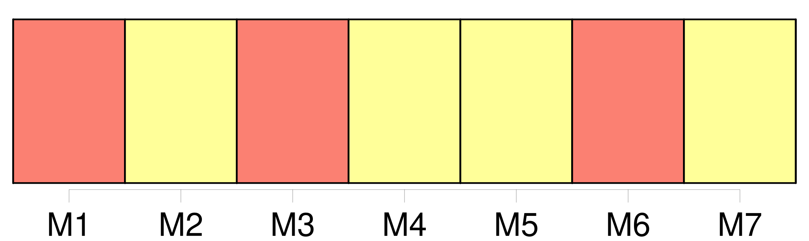

Longueur nb maillons : 9 mentions |
 |
Il ne serait pas si difficile de construire d'autres sous-marins, que nous pourrions relier entre eux par [des couloirs-tubes, détachables à loisir] ; quand l'un des sous-marins voudrait remonter à la surface, il n'aurait qu'à se détacher des autres ; si la ville entière avait quelquefois, la fantaisie d'aller faire une expédition chez les terriens, on n'aurait encore qu'à détacher [les tubes] , et chaque habitant de la ville voyagerait ainsi avec toute sa maison. [160 phrases]
»
Chacun était chez soi dans son sous-marin ; [les couloirs] étaient [les rues de cette ville]
On n'était pas prisonnier à Némoville : chaque sous-marin se détachait facilement [des couloirs extérieurs] et pouvait seul remonter à la surface de la mer, quand il le désirait. [136 phrases]
On parcourut [les rues-couloirs, toutes éclairées à l'électricité] , et on pénétra dans un sous-marin que le prêtre n'avait pas encore visité. [6 phrases] On entendit dans [les couloirs] des bruits de pas, c'étaient les Némovilliens qui venaient présenter leurs hommages à leur curé, et Roger, au nom de tous, offrit au prêtre l'église sous-marine : « Nous y avons tous travaillé, expliqua-t -il ; les uns ont modelé les statues, les autres ont fait les plans et les enfants eux -mêmes ont fait leur part, en recueillant sur la grève les colimaçons qui ornent le maître-autel. [9 phrases] Aussitôt [les rues] s'emplissent de tous les habitants, qui se dirigent vers l'église ; personne n'aurait voulu manquer cette première messe de minuit. |
|
Il est possible de télécharger la ressource sur la page Ortolang |
Si vous avez des questions ou vous voyez des erreurs, merci d'envoyer un mail à silvia.federzoni89@gmail.com |